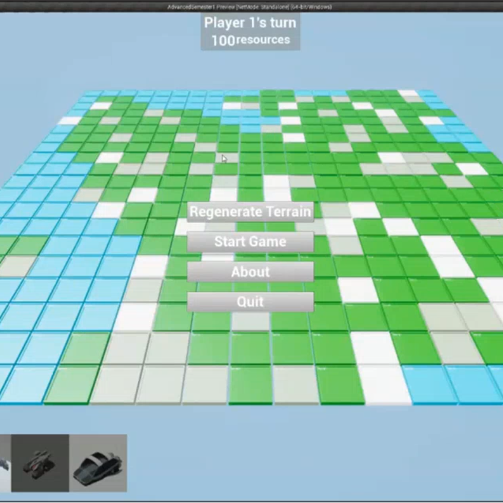

Project Showcase
To find out more about any of the projects below, click their thumbnail image.
Sovereign
Sovereign is a top-down roguelike ARPG developed by myself, and a team of students during my second year at Staffordshire University. The gameplay takes inspiration from Diablo, and features three full class systems with unique abilities for each.
More InfoCase Closed
Case Closed is a vertical slice of a point-and-click puzzle game. It was created to demonstrate the point-and-click framework I created inside Unreal Engine, for my Advanced Games Technical design module during my final year at university.
In the game, you play as Nick Eastcliff, a world famous detective. Tasked with finding a missing girl in the town of Langdale, Eastcliff finds himself uncovering a deeper mystery in the town, involving a seemingly normal family.
The Bigger Picture
The Bigger Picture is a 2D puzzle-platformer taking place in a 3D environment. Tasked with moving a 2D player around rooms projected onto various surfaces in a 3D environment, they must access the office's server computer, and free themselves from the confines of the building's walls.
More InfoShort Stories
Short stories was an entry to the Summer Slow Jam 2021 from myself and two of my friends. Taking place in a series of differently genred books, each level was designed by one of our team in an attempt to make as much varied gameplay as possible in the week we had to develop the game.
More Info2D Mario Maker Clone (C++)
During my first year of University, I created a 2D Mario clone with a map editor for my Game Engine Creation module. The game was created using C++ and the Simple Direct Media Library (SDL)
More InfoThe Last Templar
Made during my second year 3D Design & Development Module, this metroidvania-RPG features a full equipment and inventory system, three unique boss fights, alongside various traps and interactables to provide a suitable challenge and enough mechanical variety to create emergent gameplay.
More Info
Procedural grid-based strategy game
This prototype was created for the first semester of my Advanced 3D Games Engines and Scripting module at University. It includes simple turn-based strategy mechanics for two players, four unit types, and a procedurally generated map. Units move around the grid using a custom A* pathfinding algorithm, and the map is generated using a combination of cellular automata and a flood fill algorithm.
More InfoTop-Down Shooter Framework (Split-Screen)
Created for the second semester of my Advanced 3D Games Engines and Scripting module, this project contains three maps, and five modes for up to four players to experience locally, accompanied by allied or enemy AI on each team, which seek cover when damaged by utilising Unreal Engine's Environmental Query System (EQS).
More InfoThe Bridge
The Bridge was created using the 'Teef' framework, given to me during the first semester of my 3D Games Design & Development module in my second year of university. Tasked with creating a prototype which demonstrates both our technical and design skillsets as developers, I implemented a weapon upgrade system into the framework, which allowed players to collect resources from killed enemies and use them at upgrade stations to increase their damage, movement and defense capabilities - I also designed a level to work around this new mechanic.
More InfoUnreal Tournament Map
During my first year of University, the creation of this capture the flag map for Unreal Tournament served as my introduction to the Unreal Engine 4 editor.
More Info